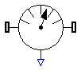
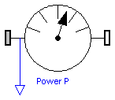

| Name | Description |
|---|---|
| RelativeSensor | Measure relative quantities between two frames |
| Power | Measure power flowing from frame_a to frame_b |

Relative kinematic quantities between frame_a and frame_b are computed and provided at the output signal connector outPort in packed format in the order
For example, if parameters get_v_rel and get_w_rel are true and all other get_XXX parameters are false, then outPort.signal contains 6 elements:
outPort.signal[1:3] = relative velocity outPort.signal[4:6] = relative angular velocity
If parameter resolveInFrame_a is true, then the computed relative kinematic vectors are resolved in frame_a of this component. Otherwise, the relative kinematic vectors are resolved in frame_b. For example, if resolveInFrame_a = false, and get_v_rel = true, then
outPort.signal = v_rel_b
= der(r_rel_b)
is returned, i.e.,
the derivative of the relative distance r_rel_b from frame_a to frame_b,
resolved in frame_b.
| Name | Default | Description |
|---|---|---|
| animation | true | = true, if animation shall be enabled (show arrow) |
| resolveInFrame_a | true | = true, if vectors are resolved in frame_a, otherwise in frame_b |
| get_r_rel | true | = true, to measure position vector from origin of frame_a to origin of frame_b |
| get_v_rel | false | = true, to measure velocity of origin of frame_b with respect to origin of frame_a |
| get_a_rel | false | = true, to measure acceleration of origin of frame_b with respect to origin of frame_a |
| get_w_rel | false | = true, to measure angular velocity of frame_b with respect to frame_a |
| get_z_rel | false | = true, to measure angular acceleration of frame_b with respect to frame_a |
| arrowDiameter | world.defaultArrowDiameter | Diameter of arrow from frame_a to frame_b [m] |
| arrowColor | MultiBody.Types.Defaults.SensorColor | Color of arrow from frame_a to frame_b |
model RelativeSensor "Measure relative quantities between two frames"
import SI = Modelica.SIunits;
extends MultiBody.Interfaces.PartialRelativeSensor(outPort(n=3*((if get_r_rel
then 1 else 0) + (if get_v_rel then 1 else 0) + (if get_a_rel then 1
else 0) + (if get_w_rel then 1 else 0) + (if get_z_rel then 1 else 0))));
parameter Boolean animation=true
"= true, if animation shall be enabled (show arrow)";
parameter Boolean resolveInFrame_a=true
"= true, if vectors are resolved in frame_a, otherwise in frame_b";
parameter Boolean get_r_rel=true
"= true, to measure position vector from origin of frame_a to origin of frame_b";
parameter Boolean get_v_rel=false
"= true, to measure velocity of origin of frame_b with respect to origin of frame_a";
parameter Boolean get_a_rel=false
"= true, to measure acceleration of origin of frame_b with respect to origin of frame_a";
parameter Boolean get_w_rel=false
"= true, to measure angular velocity of frame_b with respect to frame_a";
parameter Boolean get_z_rel=false
"= true, to measure angular acceleration of frame_b with respect to frame_a";
parameter SI.Diameter arrowDiameter=world.defaultArrowDiameter
"|Animation|if animation = true| Diameter of arrow from frame_a to frame_b";
parameter MultiBody.Types.Color arrowColor=MultiBody.Types.Defaults.SensorColor
"|Animation|if animation = true| Color of arrow from frame_a to frame_b";
SI.Position r_rel[3]
"Position vector from origin of frame_a to origin of frame_b resolved according to resolveInFrame_a";
SI.Velocity v_rel[3]
"Velocity of origin of frame_b with respect to origin of frame_a resolved according to resolveInFrame_a";
SI.Acceleration a_rel[3]
"Acceleration of origin of frame_b with respect to origin of frame_a resolved according to resolveInFrame_a";
SI.AngularVelocity w_rel[3]
"Angular velocity of frame_b with respect to frame_a resolved according to resolveInFrame_a";
SI.AngularAcceleration z_rel[3]
"Angular acceleration of frame_b with respect to frame_a resolved according to resolveInFrame_a";
MultiBody.Frames.Orientation R_rel
"Relative orientation of frame_b with respect to frame_a";
protected
parameter Integer i1=1;
parameter Integer i2=if get_r_rel then i1 + 3 else i1;
parameter Integer i3=if get_v_rel then i2 + 3 else i2;
parameter Integer i4=if get_a_rel then i3 + 3 else i3;
parameter Integer i5=if get_w_rel then i4 + 3 else i4;
parameter Integer ndim=if world.enableAnimation and animation then 1 else 0;
MultiBody.Visualizers.Advanced.Arrow arrow[ndim](
each r=frame_a.r_0,
each r_head=frame_b.r_0 - frame_a.r_0,
each diameter=arrowDiameter,
each color=arrowColor);
equation
if get_r_rel or get_v_rel or get_a_rel then
if resolveInFrame_a then
r_rel = MultiBody.Frames.resolve2(frame_a.R, frame_b.r_0 - frame_a.r_0);
else
r_rel = MultiBody.Frames.resolve2(frame_b.R, frame_b.r_0 - frame_a.r_0);
end if;
else
r_rel = zeros(3);
end if;
if get_v_rel or get_a_rel then
v_rel = der(r_rel);
else
v_rel = zeros(3);
end if;
if get_a_rel then
a_rel = der(v_rel);
else
a_rel = zeros(3);
end if;
if get_w_rel or get_z_rel then
if resolveInFrame_a then
R_rel = MultiBody.Frames.relativeRotation(frame_b.R, frame_a.R);
w_rel = -MultiBody.Frames.angularVelocity2(R_rel, der(R_rel));
else
R_rel = MultiBody.Frames.relativeRotation(frame_a.R, frame_b.R);
w_rel = MultiBody.Frames.angularVelocity2(R_rel, der(R_rel));
end if;
else
R_rel = MultiBody.Frames.nullRotation();
w_rel = zeros(3);
end if;
if get_z_rel then
z_rel = der(w_rel);
else
z_rel = zeros(3);
end if;
frame_a.f = zeros(3);
frame_a.t = zeros(3);
frame_b.f = zeros(3);
frame_b.t = zeros(3);
if get_r_rel then
outPort.signal[i1:i1 + 2] = r_rel;
end if;
if get_v_rel then
outPort.signal[i2:i2 + 2] = v_rel;
end if;
if get_a_rel then
outPort.signal[i3:i3 + 2] = a_rel;
end if;
if get_w_rel then
outPort.signal[i4:i4 + 2] = w_rel;
end if;
if get_z_rel then
outPort.signal[i5:i5 + 2] = z_rel;
end if;
end RelativeSensor;

model Power "Measure power flowing from frame_a to frame_b"
import SI = Modelica.SIunits;
extends Modelica.Icons.RotationalSensor;
Modelica.Blocks.Interfaces.OutPort outPort(final n=1, redeclare type
SignalType = SI.Power);
Interfaces.Frame_a frame_a;
Interfaces.Frame_b frame_b;
equation
frame_a.r_0 = frame_b.r_0;
frame_a.R = frame_b.R;
zeros(3) = frame_a.f + frame_b.f;
zeros(3) = frame_a.t + frame_b.t;
outPort.signal[1] = frame_a.f*Frames.resolve2(frame_a.R, der(frame_a.r_0)) +
frame_a.t*Frames.angularVelocity2(frame_a.R, der(frame_a.R));
end Power;